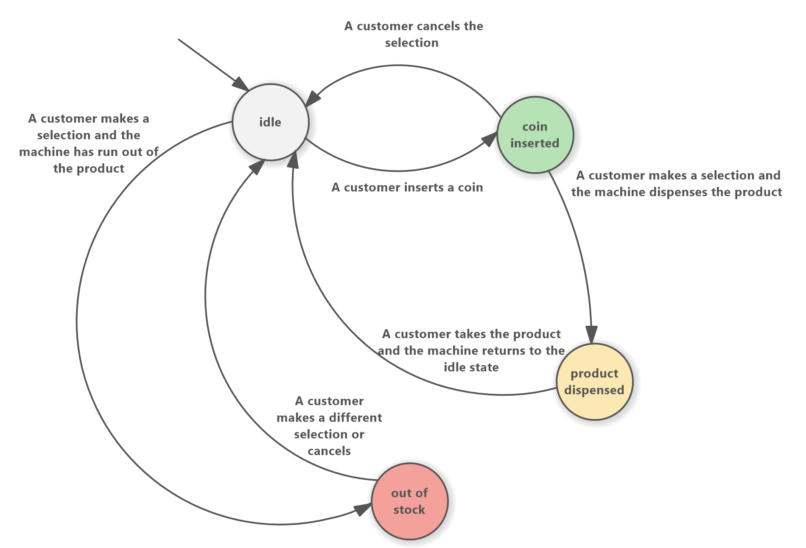

Cos'è una Macchina a Stati Finiti?
Le Macchine a Stati Finiti (Finite State Machines, FSM) sono modelli matematici utilizzati per descrivere il comportamento dinamico di un sistema. Una FSM rappresenta un sistema come una serie di stati, ognuno dei quali può cambiare in risposta a determinati eventi o condizioni.
Questo formalismo è ampiamente impiegato in ambiti come le interfacce utente, i protocolli di rete, i sistemi di controllo e i software embedded. Permette di passare da specifiche informali a modelli precisi, verificabili e implementabili.
Componenti principali di una FSM
- Stati: le condizioni in cui il sistema può trovarsi (es. “Attivo”, “In attesa”, “Errore”)
- Transizioni: i passaggi da uno stato all'altro, causati da eventi o input
- Eventi/Input: i segnali o condizioni che provocano le transizioni
- Stato iniziale: lo stato da cui parte il sistema
- Stati finali (facoltativi): stati terminali che rappresentano la fine del processo